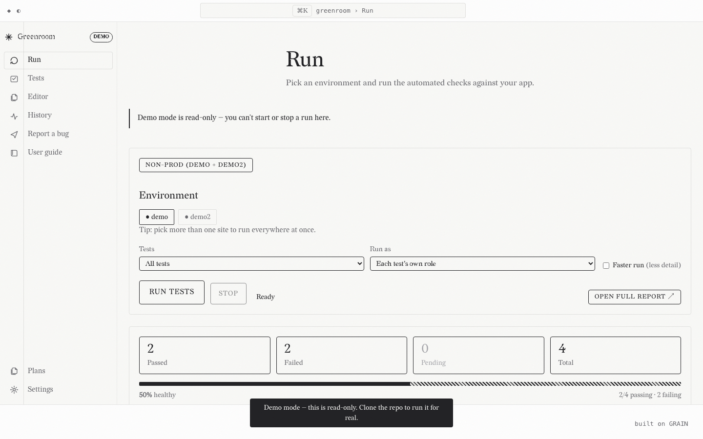
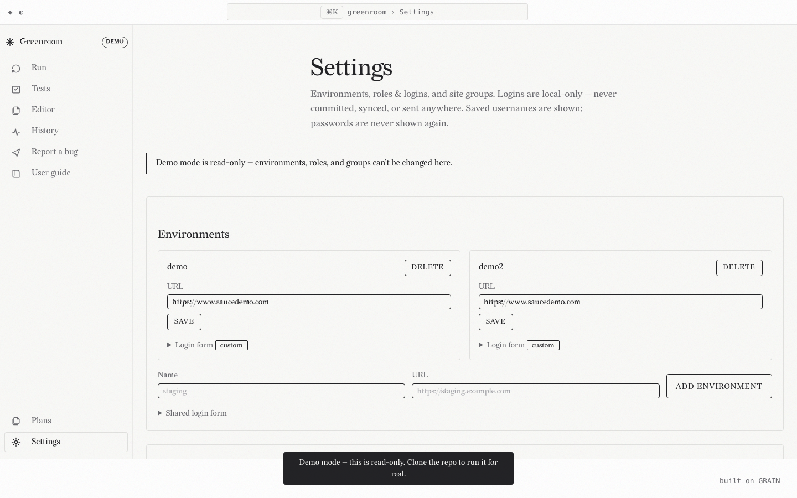
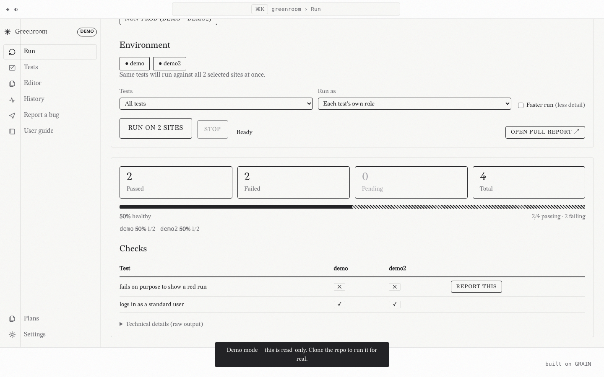
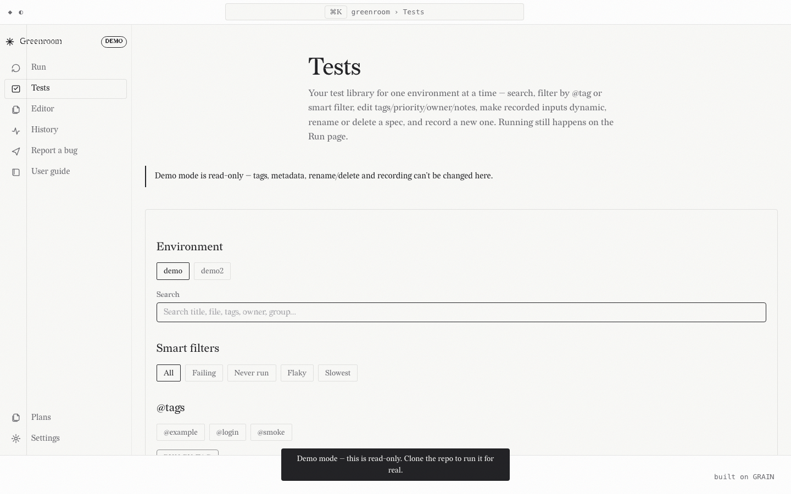
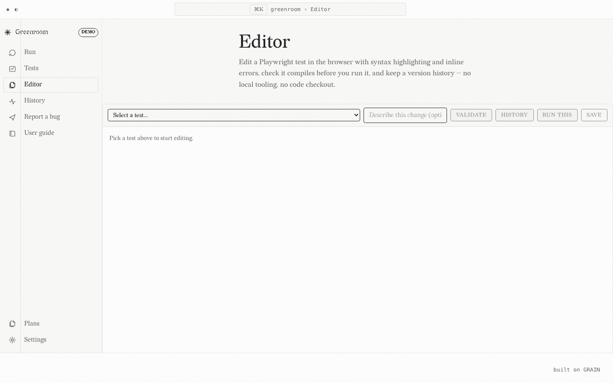

Browser tests without the coding.
Point it at any live web app. Click Run. Get pass/fail with screenshots, video, trace, and a one-click bug bundle. No coding.
Two editions, one codebase: Local runs on your own machine straight from VS Code, Team is one instance your company hosts behind a URL. A zero-config demo means it looks alive the moment you clone it.
What it does
Everything a non-coder needs to test, and everything a developer needs to fix.
Greenroom wraps Playwright in a calm dashboard. You supply the URLs and how to log in — it never needs your app's source.
Live pass/fail dashboard
Stat tiles, a health bar, and a live checklist update as tests run — so you see green and red the moment it happens.
Roles & per-site logins
Create roles and map them to sites. Logins are stored only in a private file on your machine — never committed, synced, or sent anywhere.
Simultaneous multi-environment runs
Run the same tests against dev, staging and prod at once — each with its own accounts — and read the results as a test-by-environment matrix.
Record tests by clicking
A browser opens, you click through your site, and your clicks become a test. The login for the role you pick is added automatically.
Dynamic test data
Recorded forms submit fresh, unique inputs every run — so a signup test never trips over "email already exists" the second time.
Video scrub → PDF
Scrub the recording to the exact moment something broke, see the browser logs at that instant, and export a clean PDF.
One-click bug bundle
Trace, video, screenshots, logs and a plain-language summary — zipped into one file that gives a developer everything to reproduce it.
Tags, metadata & smart filters
Organize tests with tags, groups, owners and priorities — then filter to what matters: failing, flaky, never-run, or slowest.
No command typing
VS Code tasks do the work. A non-coder opens the folder, picks a task, and clicks Run — no terminal, no scripts, no setup ceremony.
Edit tests in the browser
Open any test in a real code editor inside the app, with validation before it saves — so a small fix never needs a checkout or a toolchain.
Local, or Team
Local is a single-user tool: no accounts, no server, nothing leaves your machine. Team is one hosted instance your colleagues just sign into — accounts, shared environments, per-resource visibility and a queue for concurrent runs. Same codebase; the app shows which one you are in.
How it works
From a URL to a shareable bug report in three steps.
Pick your environment(s)
Choose one site or several. Select dev, staging and prod together to run everywhere at once, each with its own login.
Click Run
Watch the live checklist tick over to pass or fail. Every run records screenshots, video and a full trace by default.
Share a bug bundle
Found a failure? Download the zipped bundle or export a PDF and hand a developer everything they need to fix it.
A look inside
Calm, readable, built for people who don't write code.





Try it
Open the folder in VS Code and press Run.
Non-coders never touch a terminal. Prefer commands? They're there too:
npm run demo boots a populated, read-only dashboard with zero config · npm start opens the real app at localhost:4321
Cloning it yourself? Some of Greenroom's building blocks are published privately, so bun install needs a GitHub token with read:packages — the README walks through it.